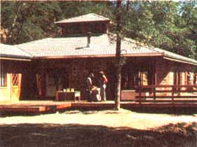
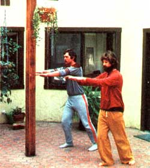
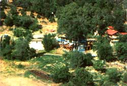
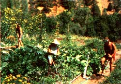

Intentional Communities: Some Inside Views
The Renaissance Community, Massachusetts
East Wind Missouri
PART ONE
We all live in communties of one kind or another. Even large cities can offer cohesive neighborhoods with common goals, interests, or ethnic backgrounds. Generally speaking, though, as towns grow larger and as families disperse, a sense of community becomes harder to find Still, while an urban area may be impersonal, it is necessarily a highly interdependent environment.
Likewise, even people who move to the country "to become self-sufficient" discover that success in attaining their goal is most often tied to the help and support they receive from people who live nearby - and the more remote the location, the more vital such cooperation is.
Realizing the importance of such interdependence, some individuals go a step or two further and try to guarantee both physical and moral support by deliberately creating "neighborhoods "of like-minded persons. It's not anew concept. The Pilgrims were such people. Many of our early American communities were remarkably successful, others flourished briefly, some-for various reasons-died quick deaths. Those patterns are still being repeated today.
In the last two decades in particular, there has been a revival of the intentional community concept. Currently, there are literally thousands of such places-large or small, struggling or prospering - all over the world. Their reasons for being, their forms of government, and their philosophies are as varied as we ourselves are.
The Community Referral Service (P.O. Box 2672, Eugene, OR 97402) has compiled information on more than 125 intentional communities in the United States, which costs $4.00 plus $1.00 for shipping and handling, and every three months puts out updated lists costing $1.00 each. This organization also contacted a variety of intentional communities for MOTHER, and the result is the three-part series that begins in this issue.
By publishing these firsthand reports written by community members, we are not endorsingthese specific places (after all, we haven't actually visited most of them) but are trying to offer a small sampling of the diversity of such groups today. We recommend the CRS listing for anyone interested in a broader look at the movement. We also urge you to check out any intentional community very carefully before becoming involved. Nearly all require extended visits, some financial commitment, and the approval of most, if not all, of their members before accepting new residents. On the other hand, we've found that many offer challenging and viable alternative lifestyles, so a careful search may turn up just the supportive new home you've been looking for.
Lowell Smith, Christine Wippert, and Ishvara
At Harbin Hot Springs we've come together to fulfill the dreams of the New Age. We do this by providing a serene and beautiful environment for people in which they can realize their human potential ... heal them-selves and others ... and be in tune with natural and spiritual energies in living, working, and creating. We enjoy and share this environment with visitors, both individuals and groups that come for education, recreation, and retreat. The quiet here, the clean air, and the famed hot and cold pools are popular with local people and visitors from points as distant as Sweden, Germany, Hawaii, and Pakistan.
The community accepts for membership those people who, in their own ways, feel a resonance with the New Age ideals of the human potential movement, the holistic natural movement, and/or universal spirituality. We have no required beliefs or practices. What's important to us is how people act, rather than what they profess to believe.
Many programs, which are organized largely on a do-it-yourself basis, are available, but none are mandatory. These include awareness groups ... groups designed specifically for men, women, or parents ... yoga, t'ai chi, and dance/aerobics classes ... macrobiotic and cooking programs ... and so on.
For centuries Native Americans believed Harbin Hot Springs had magical, healing properties. The property functioned as a wellknown European-type spa in the nineteenth and early twentieth centuries. After a colorful history and a gradual decline, the resort was abandoned in 1968. In 1972 it was purchased by one of our community's founding members, who donated the property to Heart Consciousness Church, a nonprofit corporation organized by the resident community to manage the land and to help manifest the community's common ideals and beliefs.
The transformation since those beginnings has been remarkable. New construction has been taking place at an impressive rate, along with loving renovation of our older buildings. Our large community garden, which has replaced-for the most part-individual plots, is starting its third year and is a showpiece.
There are several established schools here: the Niyama School of Massage, the Harbinger Center work-study program, the East West Center of Macrobiotics, and the Shiatsu Center. The school for our own children has three certified teachers, parent volunteers, and other helpers who simply like youngsters. Our cabinet shop builds our furniture, doors, and windows; we expect eventually to make such products for outside sales. In our auto shop an expert mechanic repairs vehicles for visitors and community members.
Recently we opened a second restaurant to offer more variety in the types of food we serve. We also have a wide-screen projection TV, where movies are shown, and a rumpus room with table tennis and a piano. Another recent plus for our members is an exchange program we've begun with Esalen Institute in Big Sur. But our oldest and favorite facilities are the pools themselves: five naturally heated, clean baths of different sizes and temperatures.
Our main income is derived from operating the hot springs resort and from renting space to outside conference groups. Many visitors come for an hour or two or for the day, while others stay overnight in our rooms or camp.
The four conference buildings we've constructed or renovated are capable of handling from 5 to 300 persons, usually for weekend workshops. (Members are often able to attend these at vastly reduced rates.) In addition, many classes and programs-usually free are offered by members.
Aside from construction, members work mostly at jobs connected with visitors or with community administration, such as office reception, bookkeeping, housekeeping, landscaping, security, teaching, child care, massage, or special projects. Some of us have small businesses or are able to sell our own work, and a few have outside jobs. Our community includes therapists, school teachers, musicians, artists, contractors, cooks, laborers, skilled trades people, lawyers, an M.D., an airline pilot, and a computer manager, to identify a few. Many of us came here with the specific intention of lending our energies permanently to creating a better life situation, while some of us simply wanted to stay awhile to learn new skills or to take time out in our lives for reassessment while relaxing in the natural hot pools. Often the second kind of motivation has been transformed into the first.
Each resident member must work 24 hours a week for the community, pay $48 per week, or arrange some combination of the two. Our payment rates for members' labor are low to permit much of our generated income to go toward making overall improvements. Members can cover the cost of their food and their personal expenses by working extra hours for Harbin if they have no other source of income. Most of us put in from 25 to 40 hours' work each week here ... but usually in a much more relaxed manner than that of our counterparts in the business world. Cottage industries are encouraged and sometimes assisted.
Decisions are not made by the entire community but by committees: The majority of the members of each are the same six people. A larger body of 15, known as the Sponsoring Members, decides who will and who will not live at Harbin Hot Springs. Applicants must obtain and maintain the sponsorship of five members of this body, a process that's not difficult for the majority of candidates. Anyone who joins the community can participate in its governmental structure by demonstrating commitment, competence, and willingness to take on responsibility.
We now number 80 adults and expect to expand to an eventual population of 300 to 500 at any one time (including students, visitors, and conference participants). And, of course, since people living together tend to propagate, the present number of 12 children will surely increase. Our 1,006 acres is a lot of land to grow on, but we don't want to become too crowded. In order to avoid that problem, we have devised a master plan-approved by the county-that calls for future construction of only about 60 more residences and buildings.
But that's not all! Our further ambition is to expand way beyond the Harbin Hot Springs property and its community, creating centers in other locations that will all interact with one another. Compared with other communities, we're unique in having attracted a variety of people with differing interests, backgrounds, and lifestyles. Our members find such diversity nourishing and feel that a proliferation of communities is organic to our purpose.
Then too, there are tremendous opportunities for linkages among New Age or alternative culture institutions and groups, which can easily develop into an alternative econo my-one that fosters the key aspects of life: health, growth, and spirituality promoted by a holistic perspective. Harbin Hot Springs is our vehicle for launching this effort, so we're endeavoring to accumulate talent and energy well beyond the ordinary needs of a single community.
To reach us, write the Harbin Hot Springs Community, P.O. Box 82, Middletown, CA 95461.
EDITOR'S NOTE: In our next issue, we'll share reports from three very different types of intentional communities: The Stelle Group, which is building a "model" city 90 miles south of Chicago... Roanoke of God, a Christian commune that offers help to hundreds of life's unfortunates... and The International Emis sary Community, which operates several large communities and communal houses around the world.
|
 Photos by Members of the East Wind, Renaissance And Harbin Hot Springs Communities Harbins Conference Center |
 T'ai chi at Harbin, |
 Harbin Spring's main area of development: the conference building and restaurant, the vegetable gardens, and, to the right, resident housing. |
|
 Walt, Irene, and Arl do some of the chores required to keep Harbin's community gardens in tip-top shape. These have, for the most part, replaced individual plots. |
|
|